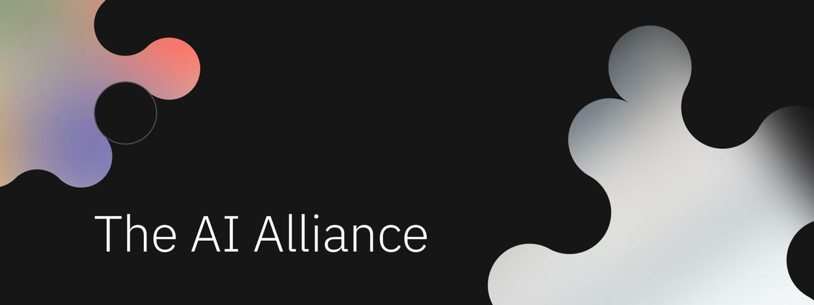
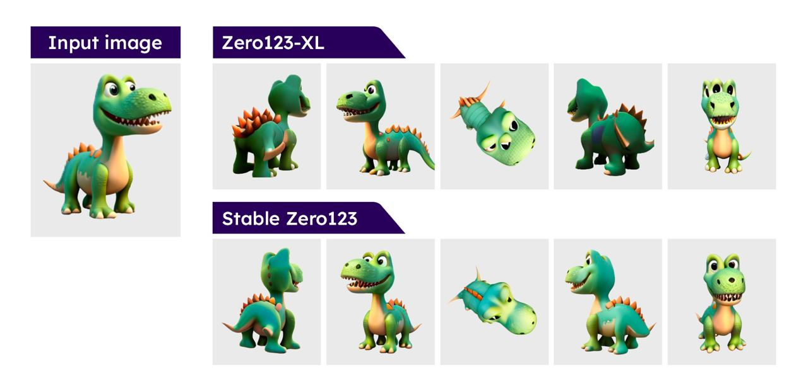
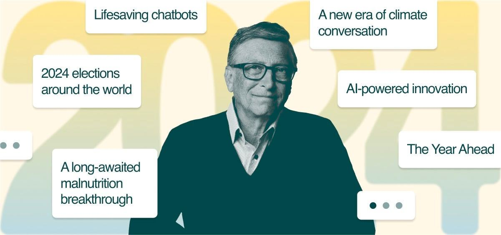

در این شماره شاهد معرفی تحقیقات و محصولات متنوعی در زمینه هوشمصنوعی مولد (Generative AI) هستیم. همانطور که انتظار میرود با سرمایهگذاریهای کلان انجام شده ایدههای مختلف و قابل توجهی در این حوزه در حال شکلگیری است. فعلاً تمرکز روی مدلهای مبتنی بر Diffusion است. در این شماره مدلهای جدیدی برای تولید تصویر، به حرکت درآوردن تصویر و تولید موسیقی و صوت معرفی شده است. دنیای مدلهای زبانی نیز خیلی پر و صدا بود! بالاخره بعد از ماهها انتظار رقیب ChatGPT توسط گوگل وارد میدان شد و توجه زیادی را به خود جلب کرد! مدلهای اپنسورس 8X7B (به زودی در یک مقاله جدید این مدل Mistral AI را معرفی میکنم) و Phi2 نیز معرفی شده و سایر مدلهای مشابه را به چالش کشیدند. تلاشها برای نمود فیزیکی هوشمصنوعی در قالب رباتهای انساننما نیز ادامه دارد. برای جزئیات بیشتر ادامه خبرنامه را مطالعه کنید.
۱. رقیب GPT-4 توسط گوگل منتشر شد | معرفی Gemini 🏅
بالاخره بعد از مدتها انتظار گوگل قدرتمندترین مدل هوشمصنوعی خود به نام Gemini (با تلفظ جمینای) را منتشر کرد. این مدل توانایی درک دیتا به شکلهای مختلف متن، کد، تصویر، ویدئو و صوت را دارد. از این رو اصطلاحاً یک multimodal (مولتی مدال) نامیده میشود. نسخه 1.0 مدل Gemini در سه سایز مختلف بهینه شده است: نسخه Nano برای گوشیهای هوشمند، نسخه Pro برای اجرای گسترهای از تسکهای مختلف و نسخه Ultra برای اجرای تسکهای بسیار پیچیده. بنابر گزارش فنی منتشر شده، نسخه Gemini Ultra در ۳۰ مورد از ۳۲ بنچمارک معتبر از مدل GPT-4 بهتر عمل کرده است. در حال حاضر از نسخه Pro در چتبات بارد استفاده شده و قرار است به زودی در مجموعهای از محصولات گوگل نیز مورد بهرهبرداری قرار بگیرد. نسخه Nano نیز در گوشی پرچمدار پیکسل ۸ به صورت آفلاین مورد استفاده قرار میگیرد و قرار است ابتدای سال بعد نسخه Ultra با معرفی Bard Advanced در اختیار علاقهمندان قرار بگیرد.
👈 برای مطالعه جزئیات بیشتر کلیک کنید.

۲. قابلیتهای جدید پیکسل ۸ با استفاده از Gemini Nano 📱
گوگل با بروزرسانی پیکسل ۸ مجموعهای از قابلیتهای هوشمصنوعی را برای کاربران این گوشی پرچمدار معرفی کرد. در این بروزرسانی از مدل Gemini Nano استفاده شده است. این مدل اخیراً توسط گوگل برای فراهم کردن قابلیتهای هوشمصنوعی مولد به صورت آفلاین در گوشیهای اندرویدی معرفی شد. خلاصه کردن صوت به صورت متن، ارائه پاسخ پیشنهادی در Gboard و بهبود کیفیت عکس و ویدئو از جمله این قابلیتها است (👈 مشاهده ویدئو).
۳. اخبار جدید از xAI
چت بات Grok در دسترس کاربران پریمیوم پلتفرم X قرار گرفت (منبع خبر). این چت بات توسط کمپانی جدید ایلان ماسک به نام xAI توسعه داده شده است. ایلان ماسک پس از خرید توئیتر و تغییر نام این کمپانی به X با تأسیس xAI وارد رقابت هوش مصنوعی شد. xAI اخیراً با ثبت درخواست افزایش سرمایه یک میلیارد دلاری در کمیسیون بورس اوراق بهادار آمریکا توانست ۱۳۴ میلیون دلار سرمایه جدید جذب کند. با این حال ایلان ماسک در پاسخ به یکی از کاربران در پلتفرم X گفت که در حال حاضر قصد افزایش سرمایه ندارد (منبع خبر).
👈 قبلاً xAI را در اینجا معرفی کردهام.
۴. تشکیل اتحاد هوشمصنوعی (AI Alliance) توسط IBM و متا
شرکتهای متا و IBM با همراهی تعدادی از شرکتهای تکنولوژی، مراکز تحقیقاتی و دانشگاهی اتحاد هوشمصنوعی یا AI Alliance را تشکیل دادند. هدف از تشکیل این اتحاد حمایت از توسعه هوشمصنوعی اپنسورس در برابر انحصار این تکنولوژي است. توسعه هوشمصنوعی به صورت اپنسورس این تکنولوژی را در اختیار تمامی انسانها قرار داده و امکان مشارکت همه را فراهم میسازد. از طرفی به عقیده برخی از افراد صاحب نظر توسعه این تکنولوژی به صورت اپنسورس به ایمنی آن نیز کمک میکند. اخیراً شرکتهای مایکروسافت، OpenAI، گوگل و آنتروپیک با راهاندازی گروهی به نام Frontier Model Forum برای توسعه هوشمصنوعی ایمن مورد انتقاد بابت لابیگری و تغییر قوانین به نفع خود شدند. شرکت OpenAI در ابتدا با هدف انتشار دستاوردهای خود برای عموم و به شکل Non-profit وارد عرصه هوشمصنوعی شد ولی در گذر زمان با تغییر رویه انحصار و کسب درآمد را اولویت خود قرار داد (منبع خبر).

۵. نقطه عطف رگولاتوری هوشمصنوعی در اتحادیه اروپا 🇪🇺
قانونگذاران و سیاستمداران اتحادیه اروپا در یک نشست ۳۶ ساعته بالاخره به یک توافق موقت حول قوانین رگولاتوری هوشمصنوعی موسوم به The AI Act دست یافتند. این توافق یک نقطه عطف در مسیر پر فراز و نشیب رگولاتوری هوشمصنوعی در این اتحادیه نامیده شد. اتحادیه اروپا پیشرو ترین منطقه اقتصادی در دنیاست که نسبت به وضع قوانین حول موضوع هوشمصنوعی اقدام کرده است. البته تلاشهای دیگری در سایر کشورها در دست اقدام است. براساس این توافق قرار است رایگیری نهایی در ابتدایی سال بعد میلادی انجام شده و عملیاتی شدن قانون حداقل تا سال ۲۰۲۵ میلادی به طول خواهد کشید. قابل ذکر است که این قانون با واکنشهای منفی زیادی همراه بوده است. به عقیده صاحبنظران، The AI Act اتحادیه اروپا را در رقابت هوشمصنوعی عقب خواهد انداخت (منبع خبر). برای آشنایی بیشتر با این قانون پستهای زیر را بخوانید:
👈رگولاتوری هوشمصنوعی در اتحادیه اروپا
👈 انتقاد کمپانیهای تک به رگولاتوری هوشمصنوعی در اتحادیه اروپا
👈اتحاد اپنسورس در برابر رگولاتوری هوشمصنوعی در اتحادیه اروپا
۶. گروهی از محققان دانشگاه برکلی با استفاده از یادگیری تقویتی (Reinforcement Learning) روش جدیدی برای تطبیق حرکت رباتهای انساننما در محیطهای مختلف ارائه کردند. رباتهای انساننما میتوانند برای جبران کمبود نیروی کار در محیطهای خطرناک، کمک به انسان در خانه و عملیات در سایر سیارهها مورد استفاده قرار بگیرند. برای مطالعه جزئیات فنی این کار تحقیقاتی اینجا را مشاهده کنید (👈 مشاهد ویدئو🤖).
۷. صحبتهای هلن تونر عضو سابق هیئت مدیره OpenAI درباره اخراج سم آلتمن
اخیراً نیویورک تایمز با خانم هلن تونر (Helen Toner) عضو سابق هیئت مدیره OpenAI و یکی از افراد اصلی که در اخراج سم آلتمن نقش داشت مصاحبه کرد. هلن تونر که در زمینه ایمنی هوشمصنوعی نیز فعالیت دارد، چند ماه پیش با همکاران خود در موسسه CSET در این زمینه مقالهای منتشر کرد. در این مقاله OpenAI به خاطر انتشار عمومی ChatGPT مورد انتقاد قرار گرفته است. زیرا با انتشار ChatGPT سایر رقبا نظیر گوگل و آنتروپیک نیز برای رقابت مصمم شده و اقدام به انتشار محصولات و سرویسهای مشابه کردهاند. ظاهراً این انتقاد از سمت هلن تونر به عنوان عضو هیئت مدیره OpenAI موجب بحث و اختلاف نظر او با سم آلتمن در روزهای قبل از اخراج شده است. تونر اخراج سم آلتمن به خاطر نگرانیها حول موضوع ایمنی را رد کرد و تاکید کرد از بین رفتن اعتماد دلیل اخراج سم آلتمن از مدیریت OpenAI بوده است. تونر همچین از وفاداری کارمندان نسبت به آلتمن ابراز تعجب کرد و گفت وظیفه OpenAI نسبت به مدیریتش نیست بلکه نسبت به ماموریتش است (منبع خبر).
👈 ماجرای اخراج سم آلتمن را از اینجا بخوانید.
۸. بعد از آمازون شرکت GXO Logistics نیز اعلام کرد در حال تست رباتهای انساننمای Digit در انبارهای خود است. ربات انساننمای Digit توسط شرکت Agility Robotics توسعه داده شده است (👈 مشاهده ویدئو🤖).
۹. تسلا از نسخه جدید ربات انساننمای اپتیموس رونمایی کرد. 🤖
نسخه Gen2 ربات انساننمای تسلا معرفی شد. این نسخه ۱۰ کیلوگرم وزن کمتر نسبت به نسخه قبلی دارد. سرعت راه رفتن آن نیز ۳۰درصد افزایش داشته است. همچنین با تغییراتی که اعمال شده، تعادل و کنترل بیشتری روی اجزای مختلف خود دارد (👈 مشاهده ویدئو🤖).

۱۰. نسخه ۲ مدل Imagen توسط گوگل DeepMind منتشر شد. 🎨
گوگل DeepMind از نسخه ۲ مدل Imagen رونمایی کرد. این مدل مشابه DALL.E برای تولید عکس از متن استفاده میشود. Imagen 2 از تکنیک Diffusion برای تولید تصویر استفاده میکند. در حال حاضر این مدل از طریق سرویس Vertex AI در پلتفرم ابری گوگل در دسترس کاربران قرار گرفته است (منبع خبر).
۱۱. به حرکت درآوردن تصاویر توسط DreaMoving 🕺
گروهی از محققان شرکت چینی علیبابا مدلی برای تولید ویدئو رقص از روی تصویر ارائه کردند. این مدل از روش Diffusion برای تولید ویدئو استفاده کرده و DreaMoving نام دارد. برای تولید ویدئو باید تصویر مرجع و دنباله حرکات به همراه یک توضیح متنی به مدل داده شود. اخیراً نمونه مشابهی به نام MagicAnimate نیز معرفی شده بود (منبع خبر و مشاهده نمونهها).
۱۲. استفاده از هوشمصنوعی در صنعت فشن و مد 👗
گروهی از محققان شرکت علیبابا مدل جدید هوشمصنوعی برای به تن کردن انواع لباس در یک تصویر ارائه کردند. این روش نیز از متد Diffusion برای تولید تصویر جدید استفاده کرده و Outfit Anyone نام دارد. این محققان در ادامه از خروجی این مدل در کنار مدل قبلی علیبابا به نام Animate Anyone برای به حرکت درآوردن تصویر جدید بهره بردهاند. قابل ذکر است که علیبابا اخیراً مدل دیگری به نام DreaMoving را برای به حرکت درآوردن تصویر انسان معرفی کرد. برای مطالعه جزئیات فنی در مورد پروژه Outfit Anyone اینجا را بخوانید.
۱۳. حذف نویز محیط در گوشیهای پیکسل گوگل 🦻
قابلیت حذف نویز محیط در گوشیهای هوشمند پیکسل گوگل با همکاری بخش Google Research توسعه داده شده است. این قابلیت از یک مدل audio-to-audio برای کاهش نویز استفاده میکند. در حال حاضر این قابلیت کل بازه فرکانسی صدا را پوشش داده و با کمترین تاخیر صدای بهبود یافته را برای کاربر پخش میکند (منبع خبر و شنیدن نمونه).
۱۴. استفاده از هوشمصنوعی مولد برای تولید داروی سرطان 💉
دو شرکت آسترازنکا (AstraZeneca) و ابسکی (Absci) در یک همکاری مشترک به ارزش ۲۴۷ میلیون دلار با استفاده از هوشمصنوعی برای کشف داروی جدید سرطان اقدام میکنند. ابسکی در زمینه کشف دارو (Drug Discovery) فعالیت داشته و در سالهای اخیر توانسته با استفاده از هوشمصنوعی مولد (GenAI) در کشف داروهای جدید به نتایج قابل توجهی دست پیدا کند. تولید داروی جدید بسیار هزینهبر بوده و شانس موفقیت پایینی دارد ولی با استفاده از هوشمصنوعی درهای جدیدی به روی این صنعت باز شده است. سال جاری ابسکی اعلام کرد با استفاده از تکنیک Zero Shot در یادگیری ماشین توانسته آنتیبادی De Novo را به صورت مجازی تولید کند (اینجا را مشاهده کنید). این تکنیک امکان تجزیه و تحلیل دیتایی که در پروسه آموزش مدل وجود نداشته را برای آن فراهم میسازد (منبع خبر).
۱۵. معرفی مدل AudioBox از متا
مدل Audiobox توسط متا برای تولید و بهبود کیفیت صوت معرفی شده است. این مدل در واقع نسل بعدی مدل Voicebox است که در ابتدای سال جاری معرفی شده بود. قابلیتهای خارقالعاده Audiobox را میتوانید از اینجا تست کنید (منبع خبر).
۱۶. تولید موسیقی با MusicFX 🎵
گوگل مدل جدید خود برای تولید موسیقی را به صورت محدود در دسترس عموم قرار داده است. این مدل MusicFX نام داشته و برای ثبتنام در لیست انتظار آن به اینجا مراجعه کنید. این مدل با دریافت Prompt از کاربر موسیقی مورد نظر را تولید میکند. ویدئویی که در تصویر مشاهده میکنید نمونهای از خروجی MusicFX است (👈 شنیدن نمونه).
۱۷. سه بعدیسازی تصاویر با Stable Zero123
شرکت Stability AI نسخه جدید مدل سهبعدی ساز خود را با نام Stable Zero123 منتشر کرد. این نسخه نسبت به مدل قبلی یعنی Zero123-XL بهبود قابل توجهی داشته است. این بهبود در تصاویر زیر نمایش داده شده است. Stable Zero123 به صورت اپنسورس صرفاً برای اهداف تحقیقاتی منتشر شده است. برای دسترسی به مدل و جزئیات فنی بیشتر به اینجا مراجعه کنید.

۱۸. مایکروسافت مدل Phi2 را معرفی کرد.
با داغ شدن مسابقه مدلهای بزرگ زبانی (LLM) شاهد معرفی مدلهای کوچک زبانی (SLM) نیز هستیم. در حال حاضر LLMها از چند ده میلیارد، تا چند میلیارد و حتی چند تریلیون پارامتر دارند. هر چقدر تعداد پارامترهای یک مدل بیشتر باشد، پروسه آموزش آن زمانبر و هزینهبر شده و در نهایت خروجی آن نیز سایز زیادی خواهد داشت. اجرای مدلهای بزرگ زبانی نیازمند منابع پردازشی زیاد است. از اینرو، برای فراهم کردن قابلیتهای مدلهای زبانی برای پلتفرمهای مختلف شاهد توسعه و معرفی مدلهای کوچک زبانی یا SLMها هستیم. کاهش سایز مدل زبانی و در عین حال افزایش کیفیت آن از ترندهای موجود در حوزه هوشمصنوعی مولد است. مدل Phi یکی از این SLMها بوده که توسط مایکروسافت منتشر شده است. نسخه Phi2 که به تازگی منتشر شده در مقایسه با نمونههای مشابه نتایج درخور توجهی داشته است.
👈 برای جزئیات بیشتر درباره این مدل اینجا را بخوانید.
۱۹. تولید موسیقی با Copilot 🎵
مایکروسافت با همکاری Suno قابلیت تولید موسیقی را به Copilot اضافه کرد. برای استفاده از این قابلیت مراحل زیر را انجام دهید (منبع خبر):
- پس از نصب مرورگر Microsoft Edge وارد آدرس copilot.microsoft.com شوید.
- وارد حساب کاربری مایکروسافت خود شده و یا حساب جدید بسازید.
- در قسمت plugins از فعال بودن Suno مطمئن شوید.
- با نوشتن Prompt مورد نظر موسیقی خود را تحویل بگیرید.
ضمناً از اینجا مستقیم میتوانید با Suno موسیقی موردنظر خود را بسازید.
۲۰. پیشبینی بیل گیتس از هوشمصنوعی 🔮
بیلگیتس بنیانگذار مایکروسافت در یک مقاله جدید به مناسبت فرارسیدن سال نو میلادی در مورد آینده هوشمصنوعی پیشبینی کرد. در ادامه خلاصهای از نکات مهم این مقاله طولانی ارائه شده است:
"هوشمصنوعی جهان را متحول کرده و منجر به نوآوری میشود. کشورهای ثروتمند نظیر آمریکا طی ۱۸ الی ۲۴ ماه آینده با هوشمصنوعی تطبیق پیدا میکنند. این تطبیق برای کشورهای فقیرتر با تاخیر و به صورت نسبی رخ میدهد. به مرور انسانها هوشمصنوعی را در کار خود وارد کرده و یاد میگیرند که چه کارهایی را با استفاده از هوشمصنوعی انجام داده و چه کارهایی را شخصاً انجام دهند. از هوشمصنوعی برای تولید واکسن و داروهای جدید استفاده میشود. ابزارهای مبتنی هوشمصنوعی طی ۵ الی ۱۰ سال آینده آموزش را متحول میکنند. این ابزارها میتوانند آموزش را براساس هر سلیقهای شخصیسازی کرده و تشخیص دهند چه چیزی به دانشآموز انگیزه میدهد." (لینک مقاله)

اگر مایل به دریافت خبرنامه هوشمصنوعی دومان در پستالکترونیک خود هستید از اینجا ثبتنام کنید. همچنین میتوانید با عضویت در کانال تلگرام این خبرنامه در سریعترین زمان در جریان اخبار جدید قرار بگیرید. برای مطالعه شمارههای قبلی اینجا را نگاه کنید.


دیدگاه خود را بنویسید